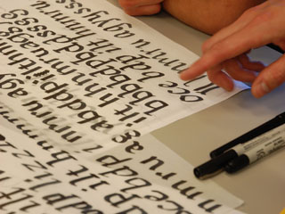

Graphic Communication at CSN
The term graphic communication includes everything in the process of creating, producing, and distributing material incorporating words and images to convey data, concepts, and emotions. Basically, anything that communicates using graphics entirely or in part, fall under graphic communications. It includes all phases from origination of the idea (design, layout, and typography) through reproduction, finishing and distribution of two- or three-dimensional products or electronic transmissions.
Computer graphics is just part of the field. Today almost every computer can do some graphics, and people have even come to expect to control their computer through icons and pictures rather than just by typing.
In the Graphic Communications Program, we think of computer graphics as drawing and/or rendering pictures on computers, and placing these images with text and/or sound to communicate. The pictures can be photographs, drawings, movies, or simulations—pictures of things which do not yet exist and maybe could never exist.
Four Concentrations
- Graphic Design is directed toward creating graphics that are targeted for the printing press—final destination is paper; components of computer graphics include print graphics and layout and electronic prepress.
- Multimedia Design is directed toward creating graphics and presentations which are targeted for a monitor or screen; components of multimedia include text, graphics, sound, video, and animation.
- Web Design is directed toward creating graphics and other materials for web pages and assembling them into a web site.
- Animation Design is a specific subset of of Multimedia Design involving the planning and production of individual motion graphics used in a larger multimedia project, or a final completed piece in an of itself, such as fully animated movies.